一、前言
苹果 2022 年 12 月 6 日宣布 App Store 定价机制最重大升级，新增 700 个价格点。小编当时的总结和分析：
App Store 新价格：
- 最低可设 $0.29 美元！
- 最高可设 $10,000 美元！（人民币 RMB 74,999 元）
- 新增 700 个价格点
- 全新定价工具（机制）
1.1 定价机制升级总结
- 新增 700 个价格点，其中 600 个价格点开发者可直接用，另外 100 个高价价格点需要申请。
- 新价格点从 美元 0.29起，最高可根据申请升至0.29 起，最高可根据申请升至 10,000。（人民币 RMB 1 ~ RMB 74,999）
- 新增约定的价格规则：以整数结尾的价格（如 X.00 或 X.90）。
- 全新定价机制:
- 自动定价：自动随外币汇率和税率的变化而更新
- 本地区定价：本地区价格由开发者固定价格，其它地区使用“自动定价”
1.2 注意说明
- 目前 App Store 支持在 175 个国家和地区的商店中以 45 种货币为产品定价。
- 开发者设置本地区定价后，在所选的地区商店中保持所获取的本地货币不变，即使外币汇率和税款发生波动。
- Apple 会根据金融数据机构提供的公开汇率信息更新定价，确保 App 内购买内容的定价在所有商店中保持平衡。
- 新增约定的价格规则，如 X.90 规则，表示开发者可以选择 0.90/0.90/1.90/2.90...2.90...~99.90 之间的价格。（参考下图）
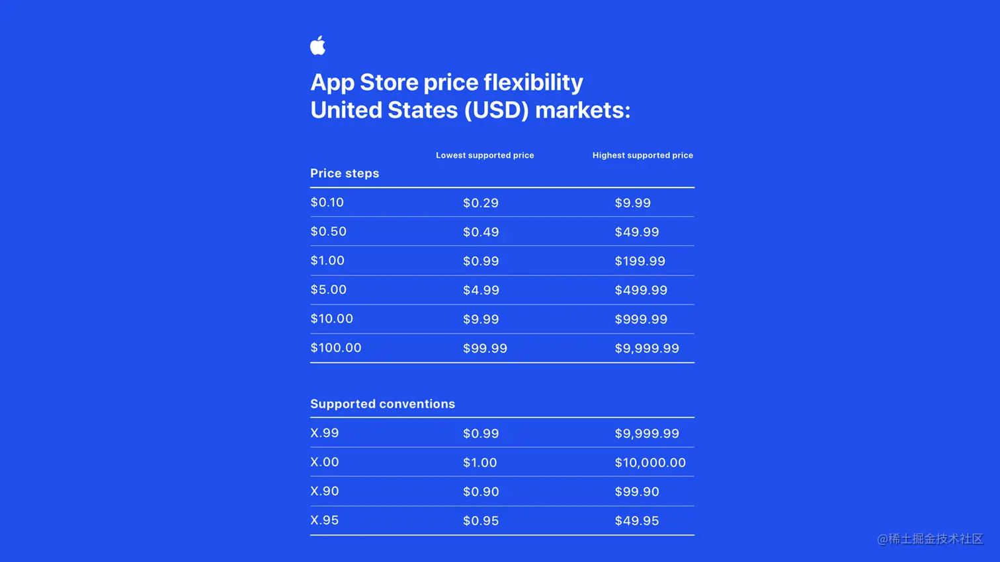
1.3 现已生效的规则
- 开发者可随时根据税款和外币汇率的变化自行调整定价。（原有的功能）。
- 自动续期订阅商品：现可使用 “本地区定价” 和 “自动定价”，包含所有的新价格点。
- ”价格等级“(PriceTier) 更新为 “自定义价格”(customerPrice)。
- 额外的 100 个高价格点，最高可达 10,000 美元。现可申请更高的价格点：developer.apple.com/contact/req…
自动续期订阅商品可以选择 $0.29 美元价格：
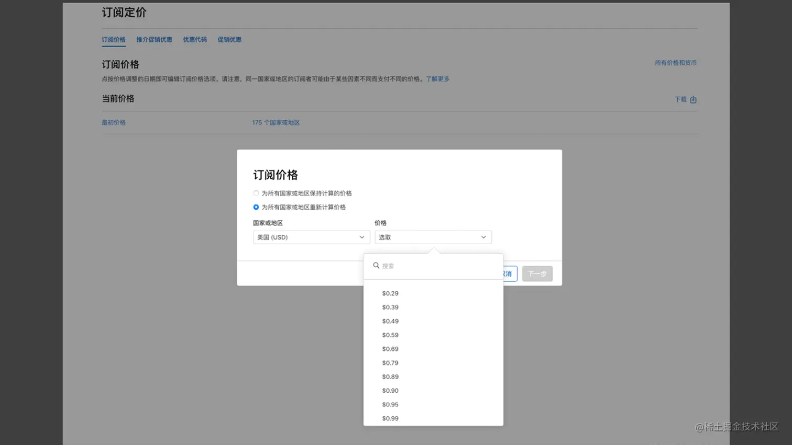
自动续期订阅商品可使用 “本地区定价” 和 “自动定价”：
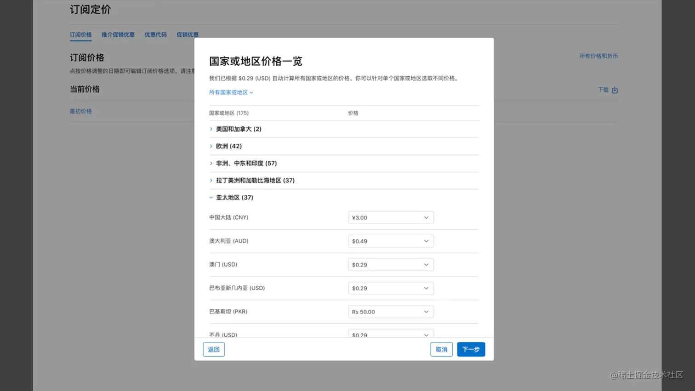
1.4 2023 年春季推出新定价功能
- 所有 App 及 App 内购买内容将可从 2023 年春季开始使用新价格点。
- 所有 App 及 App 内购买内容将可从 2023 年春季开始使用新定价机制（自动定价、本地区定价）。
- 新增约定的价格规则。（
待苹果公布细则~） - 所有开发者还可针对不同国家和地区的商店决定是否提供 App 内购买内容。（
待苹果公布细则~） - 2023 年春季，付费 App、消耗型和非消耗型App 内购买以及非续订订阅将获得更高的价格点。
- 现在 App 订阅价格可设置高达 10,000 美元（人民币 74,999 元）
- 明年 App 内购买或销售价可以设置为 10,000 美元（人民币 74,999 元）
这次的 定价功能升级 可以说影响非常的深远！为什么这么说呢？所以，这就是本文章跟大家一起探讨的内容，咱们一起来看看苹果商店价格的那些事~
二、App Store 价格的历史
讲到 App Store 的故事，有必要先说说，iTunes Store 的故事。
当然，开始前我们先来看看 Apple Store，大家可能没有留意苹果商店的存在，注意是Apple，苹果商店是苹果销售自家产品的商店，以前主要是销售 Mac 电脑和 Mac OSX 系统软件（收费），苹果有单独的 Apple Store app 下载。
Mac OS X系统（现在称为 macOS ）在最初发布时是需要付费购买的，在 2013 年苹果公司宣布将在未来免费提供系统更新。从那时起，Mac OS X系统的更新版本（如 OS X Mavericks、OS X Yosemite、OS X El Capitan等）都可以免费下载和安装。
从 2015 年开始，苹果公司正式宣布将 Mac OS X 系统更名为 macOS，并继续提供免费更新，包括 macOS Sierra、macOS High Sierra、macOS Mojave、macOS Catalina、macOS Big Sur 和最新的 macOS Monterey。这些更新版本可以在 Mac App Store 上免费下载和安装。
下图是 2000 年时苹果官网 Apple Store 页面，来自 web.archive.org：
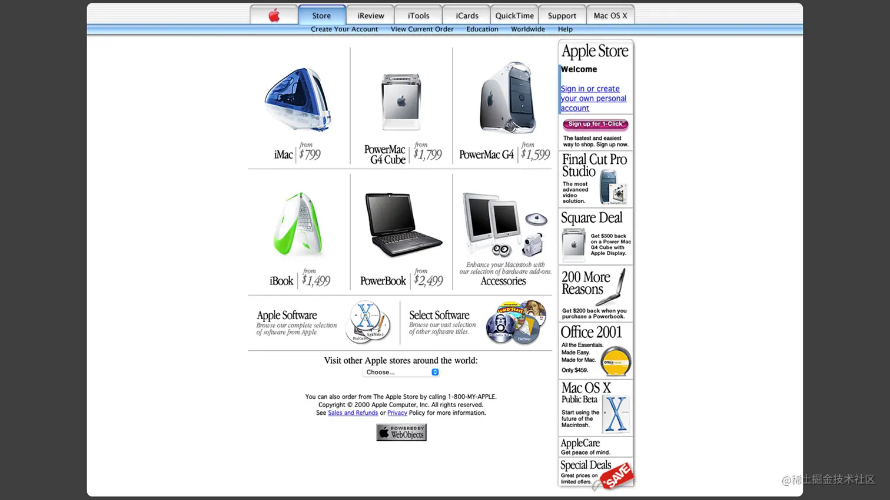
2.1 iTunes Store 定价
iTunes Store 最开始名字是叫 iTunes Music Store，是第一个成功的数字音乐商店，它在数字音乐领域推动了重要的变革，将消费者从传统的实体唱片店转向了在线购买和下载数字音乐的新模式。
2000 年初市面上已经出现很多 CD 音乐播放器，但是大多数都很差，播放歌曲也少得可怜，待机时间短。从网络下载音乐再刻录光盘的习惯，乔布斯觉得刻录太麻烦，他开始构思透过 iTunes 软件和 iPod 硬件传输歌曲的流程。最终推出 iTunes Music Store，每首歌以 $0.99 美元的价格出售给用户。
有人认为乔布斯了推销 iPod 而建立的网络音乐销售商店，因为除了 iPod 以外，任何其他的便携音乐播放器不能播放在苹果 iTunes 音乐商店上销售的使用 DRM（Digital rights management，数字版权管理）的音乐文件。
2003 年 4 月 28 日，苹果用 iTunes Music Store 之名开幕，以每首歌 $0.99 美元的价格在线销售音乐文件，在 6 天内就卖掉了 100 万首歌，乔布斯表示“这将作为音乐行业的一个转折点被载入史册”。接着在 2008 年 4 月成为美国最受欢迎的音乐销售商，之后更在 2010 年 2 月成为全世界最受欢迎的音乐商店。
所以不可否认的事实，iTunes Music Store 使得通过网络购买有版权音乐文件的机制变得更便利。所以，乔布斯在2002年被授予格莱美（Grammy）特别成就奖，以表彰他在数字音乐领域的贡献和领导作用。
乔布斯长期以来一直坚持认为，iTunes 音乐商店每首歌 $0.99 美元的价格点应该保持不变，而唱片公司则主张更灵活的价格，新歌的价格更高，常规歌曲的售价更低。
2009 年 4 月开始，苹果宣布 iTunes Store 价格调整，iTunes 上的歌曲将以三个价格点提供：
- $0.69 美元
- $0.99 美元
- $1.29 美元
- $9.99 美元（音乐专辑）
iTunes Store、Google Music、Amazon MP3 和唱片公司的分成比例都是 3:7 。
2009 年 4 月 7 日，iTunes Store 和 Amazon MP3 的前 10 名单曲价格：
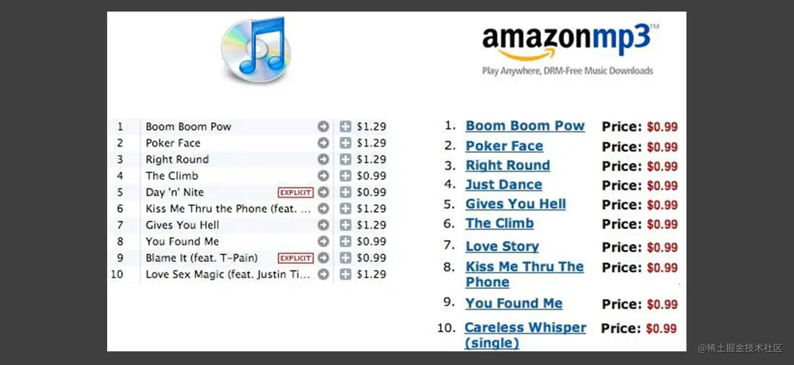
2015 年 9 月 30 日，中国大陆也开放了 iTune Store、Apple Music、iBooks Store（现为 Apple Books）。但对于影视、书刊经营权不符合我国（大陆地区）法规，所以从 2016 年 4 月始暂时关闭。从苹果官网可以查看 苹果服务系统状态 ：
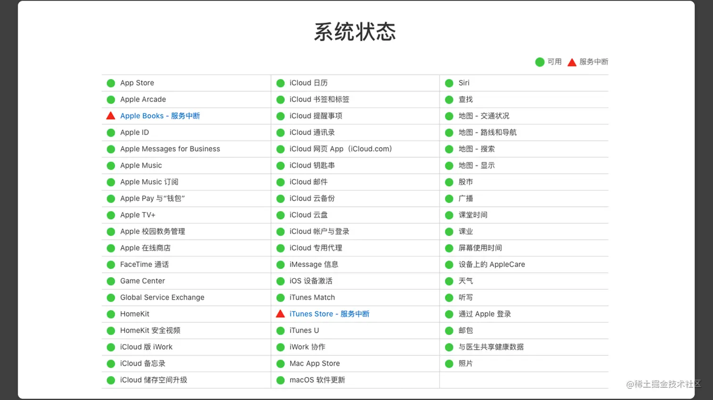
iTunes Store 曾经是世界上最受欢迎的在线音乐、电视和电影商店。凭借苹果传奇的易用性，先驱性功能，例如 iTunes Movie Rentals、集成的播客支持、iMix 播放列表共享、以更低的价格把以前购买的音轨转变成完整专辑的功能以及与 iPod 和 iPhone 的无缝集成，iTunes Store 成为了 Mac 和 PC 用户在线合法发现、购买和下载音乐及视频的最佳途径。
iTunes U 是 Apple 公司携手诸多顶级学府联合创建，让人们更便利地丰富知识、探索兴趣所在或加深对院校的了解。iTunes U 是 iTunes 在线商店 (www.iTunes.com) 中的一个专门区域，用户可以访问包括哈佛、麻省理工、剑桥、牛津、墨尔本大学和蒙特利尔大学等世界顶级学府提供的学习内容。iTunes U 让任何人都有机会体验大学课程、实验室演示、体育风采、校园导览以及专题讲座。所有 iTunes U 的内容均可免费获得，并可以在 Mac 或 PC 上欣赏，或者直接无线下载至 iPhone、iPod touch 和 iPad。
iTunes Store 最初是为了提供音乐下载和购买服务而创建的，但随着时间的推移，越来越多的数字媒体类型被添加到 iTunes Store 中，例如电影、电视节目、播客等。这使得 iTunes Store 的界面变得越来越复杂，难以处理不同类型的媒体。因此，为了更好地满足消费者需求和提供更好的用户体验:
- 2017 年 9 月，从 iOS 11 版本开始，iTunes Store 将不再支持下载和管理 iOS 应用程序。这意味着用户将无法在计算机上使用 iTunes Store 来下载和同步 iOS 应用程序。
- 2019年 iTunes Store 拆分为三个独立的应用：Apple Music、Apple Podcasts 和 Apple TV。每个应用程序都专门针对一种媒体类型，并且具有更简洁、更易于使用的界面。
- Apple Music 专门用于音乐流媒体服务；
- Apple Podcasts 用于播客节目的订阅和播放；
- Apple TV 则用于电影和电视节目的购买和租赁。
- 2021 年 7 月 1 日正式停止 iTunes U 服务，取而代之的是将 iTunes U 内容移至 Apple Books 和 Apple Podcasts。苹果发现更多的教育机构使用了其他平台来发布和分享教育内容，所以停止了 iTunes U 服务。现在苹果提供了一个名为 Apple Education Community 的新平台，该平台提供了一系列工具和资源，帮助教师和学生更好地利用苹果设备进行教育。
2022 年 5 月 10 日，随着苹果公司宣布 iPod touch 停产，音乐生生不息，全系列 iPod 均已宣告停产，iTunes Store 不复存在！
2.2 App Store 定价
2008 年 3 月 6 日，苹果CEO 史蒂夫·乔布斯 公布了 iPhone 软件路线图，正式宣布推出 App Store 应用商店！
苹果 CEO 史蒂夫·乔布斯说：“我们很高兴创建一个充满活力的第三方开发人员社区，该社区可以为 iPhone 和 iPod touch 提供数千个原生应用程序。iPhone 的企业功能与其革命性的多点触控用户界面和先进的软件架构相结合，为移动设备提供了有史以来最好的用户体验和有史以来最先进的软件平台。”
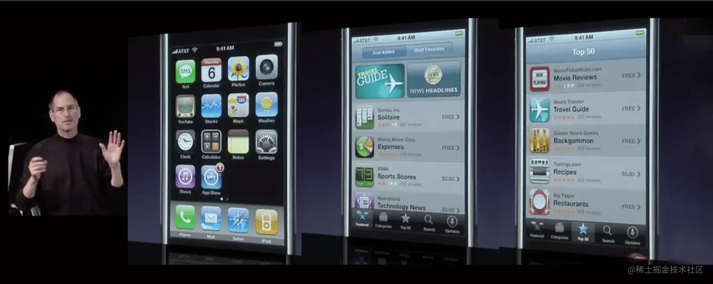
支持在 iTunes 购买、下载和管理 app：
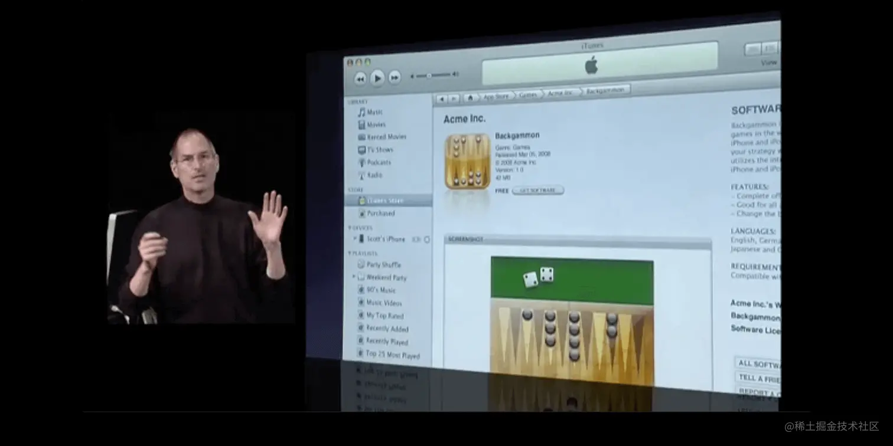
2008 年前，几家大公司控制了整个软件行业。App Store 为所有开发者敞开了一扇门，不论是个人开发者，还是大型工作室，都能充分施展创意，构建高品质的 app 并顺利地交付给全世界不断壮大的用户群。
推出时苹果就已经确认了 3/7 分成的比例，与之前的 iTunes Store 音乐分成一样：
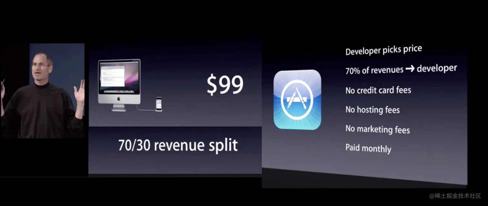
- Developer picks price（开发者定价格）
70% of revenues -> developer（开发者获取70%分成）- No credit card fees（没有信用卡税点）
- No hosting fees（没有托管费）
- No marketing fees（没有市场营销费用）
- Paid monthly（按月结算）
当时就明确开发者的年费：
- Standard Program（标准计划，上架 App Store）：
$99 - Enterprise Program（企业计划，不上架 App Store，企业内分发）：
$299
2008 年 7 月 10 日，苹果正式开放 App Store，为 iTunes 用户提供了 552 个 iPhone 和 iPod touch 应用下载。
在 AppStore 发布时，Pinch Media 统计了 552 个应用程序，其中 417 个为付费 App，135 个是免费 App。付费 App 的价格从 0.99 美元到 69.99 美元不等，最常见的价格是 0.99 美元（85个）、9.99 美元（82个）和 4.99 美元（62个）。下图汇总了最初上线 iPhone App Store 应用价格分布的条形图：
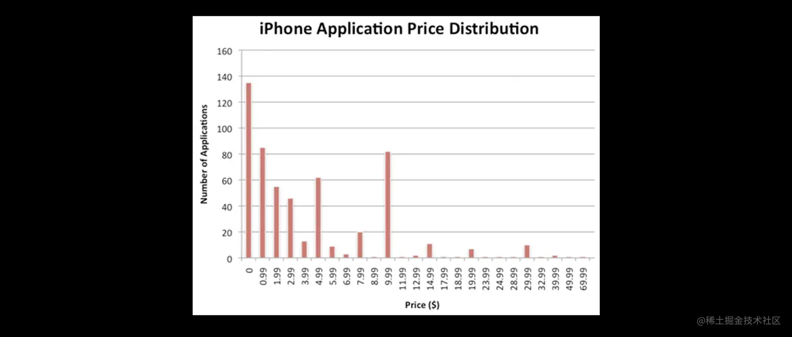
刚开始时 App Store 允许开发者，选择免费或付费下载 App，开发者定价可以从 0.99 ~ 999.99 美元之间选择。
2009 年，苹果正式推出 app 内购买（IAP，In-App Purchase，应用内购买）功能，用户可以先下载 app，随后付费解锁不同等级和功能，让更多人在愿意购买之前体验全新 app。
所以，App Store 价格定制的形式有 2 种：
- 购买 App 的价格
- 应用内购买的价格
2.3 售价 $999.99 的 I Am Rich
开发者可以随意定价，所以，App Store 刚刚发布初期，出现了一个著名的事件：“I Am Rich”（我很富有）！
2008 年 8 月 5 号，开发者 Armin Heinrich 发布了一款叫 “I Am Rich” 的 app，售价为 $999.99 美元！
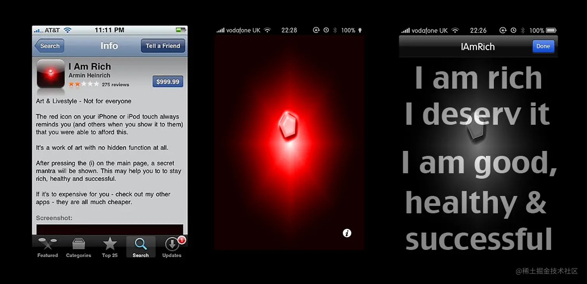
App 的功能很简单，打开后显示一个巨大发光红宝石！（如上图），潜台词：“我很富有”！点击右下角图标，会显示一段文字：“我有钱，我应得，我很好，健康且成功”。就这样，一千美元！
当时开发者说，有八位好奇的贵族购买了它！六个人来自美国，一个来自德国，一个来自法国！最初批准 App 分发后，苹果后来将其从商店中删除。最后，苹果退回了用户支付的钱。详细参考 原文。
所以，苹果一般只允许 99.99的定价，超过的价格一般审核以前会比较困难，一般会被苹果拒绝。当然，这个要看应用的类型，如今苹果价格最高可设99.99 的定价，超过的价格一般审核以前会比较困难，一般会被苹果拒绝。当然，这个要看应用的类型，如今苹果价格最高可设 10,000 美元！（人民币 RMB 74,999 元），如果说以前超过 $99.99 是不可能， 那么现在一定是可能！
2.4 App Store Connect 定价
2018 年 6 月 7 日 WWDC，苹果宣布开发者工具 iTunes Connect 变更为 App Store Connect，并且发布移动端 iOS App 版本 App Store Connect。使用新的 App Store Connect app，可以更方便地管理您的 App、查看趋势、回应评论以及回复 Resolution Center 的问题，还可以收到 App 状态变化以及用户评论的提醒。
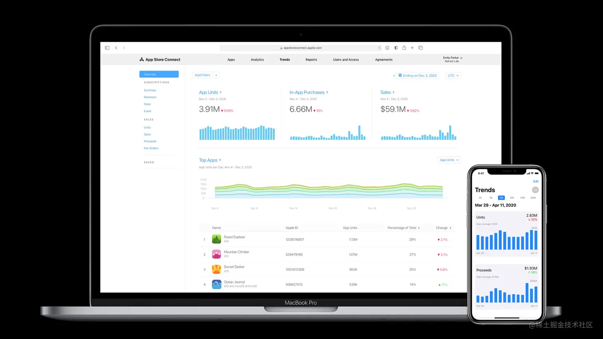
现在我们来看看最新的苹果定价规则！
App 内购买项目类型
App 内购买项目类型指可供选择的 App 内购买项目的不同类型。
| 类型 | 标识 | 说明 |
|---|---|---|
| 消耗型 | consumable | 只可使用一次的产品，使用之后即失效，必须再次购买。示例：钓鱼 App 中的鱼食。 |
| 非消耗型 | non-consumable | 只需购买一次，不会过期或随着使用而减少的产品。示例：游戏 App 的赛道。Apple 可以托管您的非消耗型产品。 |
| 自动续期订阅 | subscription | 允许用户在固定时间段内购买动态内容的产品。除非用户选择取消，否则此类订阅会自动续期。示例：每月订阅提供流媒体服务的 App。目前支持的订阅周期：一周，一个月，二个月，三个月，六个月，一年。 |
| 非续期订阅 | non-renewing-subscription | 允许用户购买有时限性服务的产品。此 App 内购买项目的内容可以是静态的。此类订阅不会自动续期。示例：已归档文章目录的年度订阅。 |
产品定价等级表
App 内购买项目选择的价格决定了顾客价格和您的收入。
| 产品定价等级 | 价格(USD) | 价格(CNY) | 等级说明 |
|---|---|---|---|
| 1 | 0.99 | 6 | 等级 1 |
| 2 | 1.99 | 12 | 等级 2 |
| 3 | 2.99 | 18 | 等级 3 |
| 4 | 3.99 | 25 | 等级 4 |
| 5 | 4.99 | 30 | 等级 5 |
| 6 | 5.99 | 40 | 等级 6 |
| 7 | 6.99 | 45 | 等级 7 |
| 8 | 7.99 | 50 | 等级 8 |
| 9 | 8.99 | 60 | 等级 9 |
| 10 | 9.99 | 68 | 等级 10 |
| 11 | 10.99 | 73 | 等级 11 |
| 12 | 11.99 | 78 | 等级 12 |
| 13 | 12.99 | 88 | 等级 13 |
| 14 | 13.99 | 93 | 等级 14 |
| 15 | 14.99 | 98 | 等级 15 |
| 16 | 15.99 | 108 | 等级 16 |
| 17 | 16.99 | 113 | 等级 17 |
| 18 | 17.99 | 118 | 等级 18 |
| 19 | 18.99 | 123 | 等级 19 |
| 20 | 19.99 | 128 | 等级 20 |
| 21 | 20.99 | 138 | 等级 21 |
| 22 | 21.99 | 148 | 等级 22 |
| 23 | 22.99 | 153 | 等级 23 |
| 24 | 23.99 | 158 | 等级 24 |
| 25 | 24.99 | 163 | 等级 25 |
| 26 | 25.99 | 168 | 等级 26 |
| 27 | 26.99 | 178 | 等级 27 |
| 28 | 27.99 | 188 | 等级 28 |
| 29 | 28.99 | 193 | 等级 29 |
| 30 | 29.99 | 198 | 等级 30 |
| 31 | 30.99 | 208 | 等级 31 |
| 32 | 31.99 | 218 | 等级 32 |
| 33 | 32.99 | 223 | 等级 33 |
| 34 | 33.99 | 228 | 等级 34 |
| 35 | 34.99 | 233 | 等级 35 |
| 36 | 35.99 | 238 | 等级 36 |
| 37 | 36.99 | 243 | 等级 37 |
| 38 | 37.99 | 248 | 等级 38 |
| 39 | 38.99 | 253 | 等级 39 |
| 40 | 39.99 | 258 | 等级 40 |
| 41 | 40.99 | 263 | 等级 41 |
| 42 | 41.99 | 268 | 等级 42 |
| 43 | 42.99 | 273 | 等级 43 |
| 44 | 43.99 | 278 | 等级 44 |
| 45 | 44.99 | 283 | 等级 45 |
| 46 | 45.99 | 288 | 等级 46 |
| 47 | 46.99 | 298 | 等级 47 |
| 48 | 47.99 | 308 | 等级 48 |
| 49 | 48.99 | 318 | 等级 49 |
| 50 | 49.99 | 328 | 等级 50 |
| 51 | 54.99 | 348 | 等级 51 |
| 52 | 59.99 | 388 | 等级 52 |
| 53 | 64.99 | 418 | 等级 53 |
| 54 | 69.99 | 448 | 等级 54 |
| 55 | 74.99 | 488 | 等级 55 |
| 56 | 79.99 | 518 | 等级 56 |
| 57 | 84.99 | 548 | 等级 57 |
| 58 | 89.99 | 588 | 等级 58 |
| 59 | 94.99 | 618 | 等级 59 |
| 60 | 99.99 | 648 | 等级 60 |
| 61 | 109.99 | 698 | 等级 61 |
| 62 | 119.99 | 798 | 等级 62 |
| 63 | 124.99 | 818 | 等级 63 |
| 64 | 129.99 | 848 | 等级 64 |
| 65 | 139.99 | 898 | 等级 65 |
| 66 | 149.99 | 998 | 等级 66 |
| 67 | 159.99 | 1048 | 等级 67 |
| 68 | 169.99 | 1098 | 等级 68 |
| 69 | 174.99 | 1148 | 等级 69 |
| 70 | 179.99 | 1198 | 等级 70 |
| 71 | 189.99 | 1248 | 等级 71 |
| 72 | 199.99 | 1298 | 等级 72 |
| 73 | 209.99 | 1398 | 等级 73 |
| 74 | 219.99 | 1448 | 等级 74 |
| 75 | 229.99 | 1498 | 等级 75 |
| 76 | 239.99 | 1598 | 等级 76 |
| 77 | 249.99 | 1648 | 等级 77 |
| 78 | 299.99 | 1998 | 等级 78 |
| 79 | 349.99 | 2298 | 等级 79 |
| 80 | 399.99 | 2598 | 等级 80 |
| 81 | 449.99 | 2998 | 等级 81 |
| 82 | 499.99 | 3298 | 等级 82 |
| 83 | 599.99 | 3998 | 等级 83 |
| 84 | 699.99 | 4498 | 等级 84 |
| 85 | 799.99 | 4998 | 等级 85 |
| 86 | 899.99 | 5898 | 等级 86 |
| 87 | 999.99 | 6498 | 等级 87 |
| 510 | 0.99 | 1 | 备用等级 A |
| 530 | 0.99 | 3 | 备用等级 B |
| 550 | 0.99 | 8 | 备用等级 1 |
| 560 | 1.99 | 12 | 备用等级 2 |
| 570 | 2.99 | 18 | 备用等级 3 |
| 580 | 3.99 | 28 | 备用等级 4 |
| 590 | 4.99 | 30 | 备用等级 5 |
目前苹果允许开发者选择的定价就是以上 94 个不同价格点！他们对应的不同国家或地区的当地货币，用户支付时，不会跟随汇率变动。所以，当某些国家或地区的汇率变化很大时，就会导致开发者亏损，或者被利用这个汇率差，切换 App Store 到汇率低的地区进行充值。目前为止，苹果还没有同步新的定价机制升级之前，是由苹果不定期更新产品定价等级表，调整某个地区的价格来解决。
另外关于 备用等级，下文会介绍，这里先略过。
至此，我们已经知道了苹果 App Store 关于定价的基本规则，接下来我们在说说一些更新的规则。
2.5 自动续期订阅商品
2011 年，App Store 开始支持订阅，但是只适用于某些类别的 App，如音视频流媒体、云数据、报纸书刊订阅等。
新的订阅分成模式
2016 年 6 月 13 日，苹果全球市场营销高级副总裁 菲尔·席勒（Phil Schiller）宣布：
- 订阅模式将向所有开发者开放，而不再局限于为数不多的几类应用的开发者。
- 如果有用户订阅一款应用超过 1 年，那么1年后产生的收入，苹果只拿走 15%，开发者可获 85%。了解更多
为什么调整订阅模式？订阅模式扩展到所有应用类别，包括游戏。当开发者将订阅模式加入自己的游戏中后，玩家每月定期付费，定期获取游戏装备，当然开发者也可以给订阅用户一些优惠。另一方面，订阅是一个相对固定的收入，用户不取消订阅，说明开发者的 App 有价值！也是苹果支持开发者！支持好内容！与合作伙伴共赢的梦想！
至此，App Store 平台上的商业模式:
- 付费应用
- 免费应用内的广告
- 免费应用的内购
- 订阅
2.6 中国区支付方式
在上文中，我们有列出几个特殊的 备用等级：
| 产品定价等级 | 价格(USD) | 价格(CNY) | 等级说明 |
|---|---|---|---|
| 510 | 0.99 | 1 | 备用等级 A |
| 530 | 0.99 | 3 | 备用等级 B |
| 550 | 0.99 | 8 | 备用等级 1 |
| 560 | 1.99 | 12 | 备用等级 2 |
| 570 | 2.99 | 18 | 备用等级 3 |
| 580 | 3.99 | 28 | 备用等级 4 |
| 590 | 4.99 | 30 | 备用等级 5 |
这里就不得不提到中国区的 App Store 付款方式的历史！
在中国大陆，2009 年 10 月 1 日，中国联通开始在中国联通网上营业厅预约销售 iPhone 3G 和 3GS 版手机。
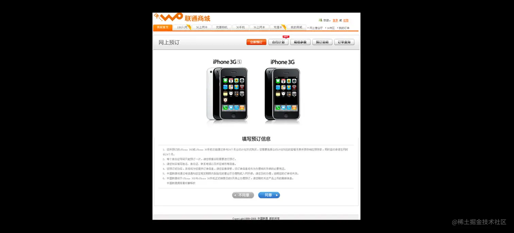
直到 2014 年之前，在中国大陆的 App Store 的只能使用 iTunes 礼品卡或者使用国际信用卡进行购买。对于一般的用户，非常难形成付费习惯，信用卡也不容易申请到。
银联支付：
- 苹果在 2014 年 11 月 17 日宣布，在中国大陆地区 App Store 中添加
银联支付选项。
银联卡支付，它指的是银联网络所发行的借记卡或者信用卡都可以进行支付。在中国，银联卡是非常常见的支付方式，因此苹果公司决定在中国地区添加银联卡支付选项，以便更好地满足中国消费者的需求。
苹果在中国开起 "1元店"
一周后，2014 年 11 月 24 日，苹果在中国的 App Store 应用商店将一些应用的价格降至了 1 元或 3 元。随后苹果公司宣布，1 元及 3 元将成为中国区应用商店新的价格标准。
从银联支付，到加上这一次的降低价格门槛，让 App Store 变得非常亲民！这些做法都有助于中国的用户养成购买正版应用的习惯。
支付宝支付：
- 苹果在 2016 年 9 月 14 日宣布，在中国大陆地区 App Store 中添加
支付宝支付选项。
微信支付：
- 苹果在 2017 年 8 月 4 日宣布，在中国大陆地区 App Store 中添加
微信支付选项。
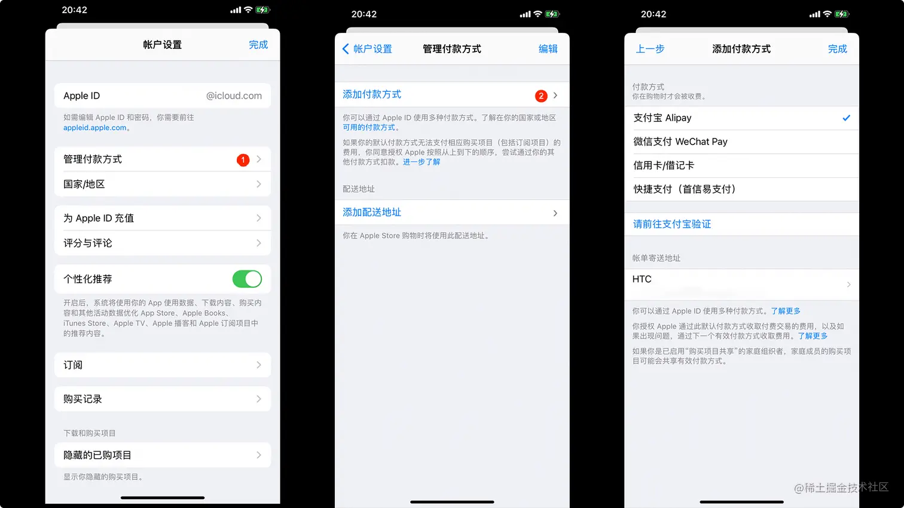
目前中国大陆可与 Apple ID 搭配使用的付款方式：
2.7 App Store 小型企业计划
2020 年 11 月 18 日，苹果公布 App Store Small Business Program 计划：
- 所有 app 于 2020 年的总收益在 100 万美元以内的现有开发者，以及新加入 App Store 的开发者，皆符合参与该计划的资格，其收益抽成亦将降低 15％。
- 如果参与该计划后，开发者的收益超过了 100 万美元，则该年的剩余时间将应用原有的标准收益抽成率。
- 如果开发者的收益在未来一个日历年内未超过 100 万美元，则其在次年将重新获得 15％ 的收益抽成资格。
App Store 小型企业计划日历年收入在 100 万美元以下的小型和独立开发者将可以享受 15% 的佣金费率，仅为 App Store 标准佣金费率 30% 的一半，更多细节阅读 App Store 小型企业计划 。
In App Purchase 这几年重要的更新或调整，可能参考之前的梳理：WWDC22 - In App Purchase 更新总结。
2.8 App Store 开发者分成结算
最后，开发者从 App Store 收到的收入分成，是怎么处理的？
苹果一般以 5 周(每年 1/4/7/10 月)或 4 周(其余的月份) 作为一个结算周期，并在每个结算周期结束后第 33 天内向开发者付账，40 天内开发者银行收到款项（如收不到，联系苹果）。
苹果 2023 AppStore 账单日历：
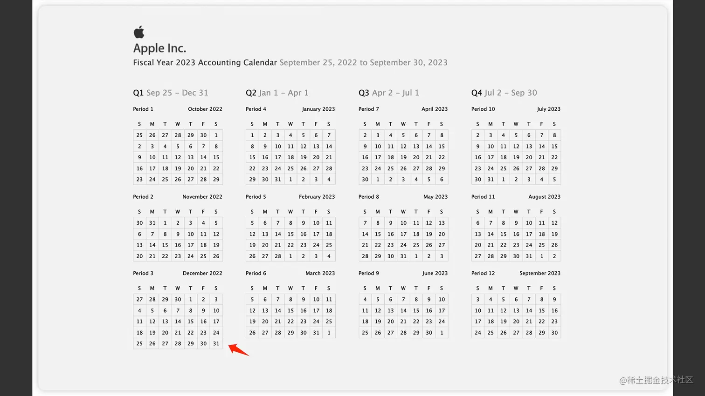
需要指出的是，2022 年 12 月有 5 周！关于为什么这一年的 12 月会有 5 周，还有更多苹果 App Store 的财年和账单周期的问题，都可以参考我们之前的文章，里面已经全部为大家解答~
三、App 本地化的价格和购买限制
关于 App Store 可以选择的价格点和规则，我们已经聊的差不多了，接下来，我们聊一点点技术问题！在实践应用过程中遇到的问题！App Store 覆盖 40 多种语言和 175 个地区，开发者如果在不同的地区，显示不同的价格呢？
3.1 只在中国内地上线的 App，能用美国账号下载吗？
答：理论上不能，但可曲线救国。直接下载会提示 “App不可用，目前你所在国家或地区尚不提供此App。”，所以，可以把美国账号的国家地区，切换成中国内地，再下载 App。
- 参考：更改 Apple ID 国家或地区 - 官方 Apple 支持
- 注：苹果 2023 的定价机制升级，可能会限制切换地区支付的问题，具体待苹果同步。
3.2 只在中国内地上线的 App，能用美国账号购买充值商品吗？
答：理论上不能，但可曲线救国。通过 3.1 方法下载 App 后，把下载 App 的账号更改为美国地区，然后就可以用美国账号（货币）进行充值。
原因：苹果是为了解决用户移民去了另一个国家或地区，导致之前购买的服务无效的问题，所以没有限制内购的账号。
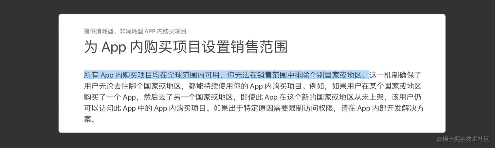
- 参考：为 App 内购买项目设置销售范围 - App Store Connect 帮助
- 注：苹果 2023 的定价机制升级，可能会限制切换地区支付的问题，具体待苹果同步。
3.3 限制充值商品的账号国家或地区（币种）
3.2 中苹果文档有提到：如果出于特定原因需要限制访问权限，请在 App 内部开发解决方案。
所以，App 内部开发解决方案如何解决限制购买地区的问题？
答：识别用户当前的国家或地区，大概有以下四种方法：
- 根据用户设备当前的语言或国家地区码
- 根据用户请求接口时，网络 IP 所在的归属地
- 根据苹果商品本地化信息 API，查询返回的国家地区码或货币码
- 根据苹果商店 API，查询当前登陆账号的国家地区码
3.4 查询商品本地化信息 API
通过苹果商品本地化信息API，可以获取当前苹果玩家登陆的账号，所在的地区和货币类型。
答：用 SKProduct API 来获取商品的 price 和 priceLocale 参数。然后使用数字格式器来格式化价格，如以下示例代码所示：
let productId = product.productIdentifier
let countryCode = product.priceLocale.regionCode
let currencyCode = product.priceLocale.currencyCode
let currencySymbol = product.priceLocale.currencySymbol
let priceNumber = "\(product.price)"
let formatter = NumberFormatter()
formatter.formatterBehavior = .behavior10_4
formatter.numberStyle = .currency
formatter.locale = product.priceLocale
let formattedPrice = formatter.string(from: product.price)
同国家或地区的商品本地化价格信息，以 0.99 美元商品示例：
| 地区 | 本地化价格 | 价格 | 货币符号 | 货币代码 | 国家地区码 |
|---|---|---|---|---|---|
| 中国 | ¥6.00 | 6 | ¥ | CNY | CN |
| 美国 | $0.99 | 0.99 | $ | USD | US |
| 韩国 | ₩1,500 | 1500 | ₩ | KRW | KR |
| 中国香港 | HK$8.00 | 8 | HK$ | HKD | HK |
| 中国台湾 | $33.00 | 33 | $ | TWD | TW |
| 中国澳门 | US$0.99 | 0.99 | US$ | USD | MO |
| 日本 | ¥160 | 160 | ¥ | JPY | JP |
| 乌克兰 | 0,99 US$ | 0.99 | US$ | USD | UA |
此 API 缺点：
- 请求是异步进行，需要从苹果服务器获取商品的价格信息等，所以耗时较长。
- API 是根据用户当前设备登陆的苹果商店账号来判断查询的国家或地区，比如登陆了美国地区的账号，则会返回 US 国家码。如果用户在 App 外又切换账号地区，那么当进入 App 时，需要判断是否存在切换账号的问题。
- 苹果暂不支持的当地货币的国家或地区时，查询商品 API 返回的货币统一是用美元（USD），例如澳门地区返回 USD，但国家码是 MO。所以，美元作为限制地区黑名单需要注意App 发布的地区是否支持当地货币。
具体支持的货币类型和国家和地区，在苹果后台的内购商品价格，点击“其它货币”可以查看：
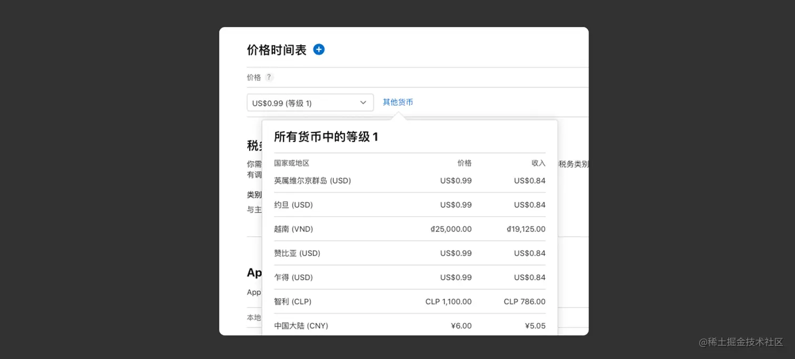
3.5 查询商店账号国家或地区码 API
iOS 13+ 以上系统，苹果提供新的 SKStorefront API 接口，可以直接获取当前 AppStore 商店登陆的账号所在的地区（就是用户的 Apple ID 绑定的国家或地区），这个更加能真实的反映当前用户的账号所有的地区。
比如澳门，是只支持美元支付，返回的货币类型是美元，但是返回的商店地区一定是澳门，所以，更加能达到精确用户的目的，并且是实现的同步接口，不用消耗时间。所以，在 iOS13 以上，默认是返回商店账号所在的国家或地区。
iOS 13 以上使用商店账号所在的国家或地区代码，示例：
- 中国 CHN
- 中国香港 HKG
- 中国台湾 TWN
- 中国澳门 MAC
- 韩国 KOR
- 日本 JPN
- 美国 USA
- 越南 VNM
- 法国 FRA
- 新加坡 SGP
API 优点：
- API 接口为同步，实时获取到国家或地区码，不需要网络请求。
- 新 API 提供了监控商店账号切换的通知，可以实时知道当前账号的国家或地区码。paymentQueueDidChangeStorefront(_:)
- 新 API 提供了充值过程中，商店国家或地区变更时，是否允许继续支付的回调，开发者可以限制国家或地区的购买。paymentQueue(_:shouldContinue:in:)
3.6 用户支付的货币类型
最后一个问题，就是开发者都会关注的，就是完成购买后，用户真实支付的货币类型是什么呢？
答：目前从苹果 StoreKit API、App Store Connect 后台的交易趋势或账单，或者是苹果开发者文档，都没有找到相关的资料！！！
最终支付什么币种，应该由苹果通知给金流商户，但金流商户最终用什么币种，是否一定遵守商家，不得而知。所以 App Store 不同国家或地区，支持的货币，而用户最终支付的币种，以结算的金融机构为准。
所以，通过以上 API 可知，目前在用户支付阶段，暂时没有 API 或技术方法，可以获取到用户真实支付的货币种类。只能是通过限制国家或地区码，或者相信苹果接口返回的商品货币种类来判断。
如果读者们了解其它方法，或者有更多补充，欢迎评论区一起交流~
四、App Store 调价的影响和应对方案
2022 年起，随着全球经济的黑天鹅事件变化，汇率波动变得越来越频繁，苹果的产品定价等级价格调整，也越发频繁，对开发者的影响也越来越大！
单 2022 年苹果价格调整就有四次：
- 2022 年 1 月 12 日：App 和 app 内购买项目即将实行税率和价格调整
- 2022 年 4 月 8 日：App 和 App 内购买项目即将实行税率和价格调整
- 2022 年 8 月 19 日：App 和 app 内购买项目即将实行税率和价格调整
- 2022 年 9 月 19 日：App 和 App 内购买项目即将实行价格和税率调整
- 2023 年 1 月 27 日：App 和 App 内购买项目即将实行税率和价格调整
其中，最近的二次我们做了监控，发现了一些问题~
2022 年 9 月 19 日苹果同步的调价公告中：
最早于 2022 年 10 月 5 日起，下列地区 App Store 上的 App 及 App 内购买项目 (自动续期订阅除外) 价格将有所提高：智利、埃及、日本、马来西亚、巴基斯坦、波兰、韩国、瑞典、越南和所有使用欧元货币的地区。
正好是国庆期间，没错！苹果不放假！
我们根据苹果的 StoreKit API、App Store Connect API，做了一个价格变化的监控告警：
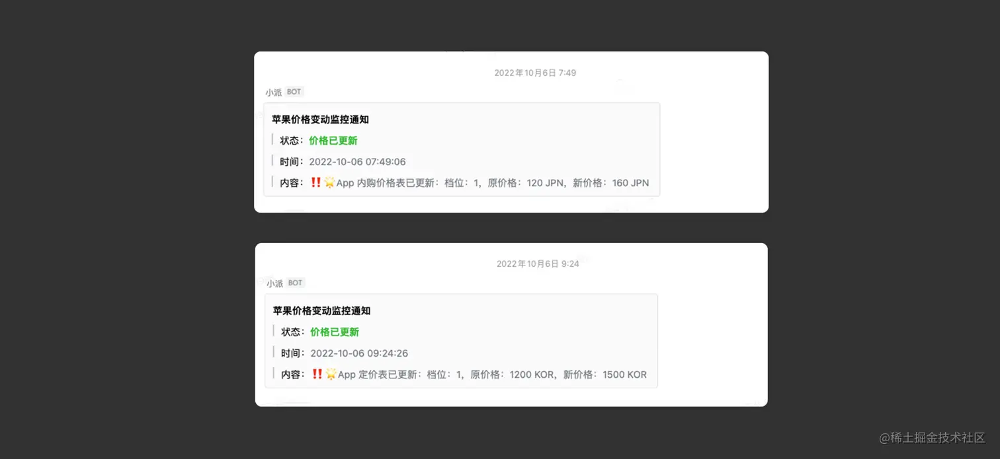
我们在 2022 年 10 月 6 日 7:49 分收到了日本地区的价格调整更新通知，9:24 收到韩国地区更新通知。
我们本以为线上更新已经生效！结果，并没有！沙盒环境的价格，测试发现是新价格，但商店下载的线上环境，价格还是旧价格！！！刚开始我们以为苹果更新没有全部生效，结果等了连续好几天~ 最为怪诡的事件，还不止这一件！
我们发现已经更新到新价格的设备，突然充值时又显示旧的价格了！oh my God~
后来，我们学聪明了，在 App 里监控最新的价格，这样就可以分析到真实线上的价格变动！结果也证明了以上2件事真实存在并且又发生了！
2023 年 1 月 27 日苹果价格调整：
2023 年 2 月 13 日起，哥伦比亚、埃及、匈牙利、尼日利亚、挪威、南非和英国 App Store 的 App 及 App 内购买项目 (自动续期订阅除外) 的价格将上调。
结果，我们在 2023 年 2 月 14 日 16:37 分收到了英国地区的价格调整更新通知，这次我们监控的是线上用户的价格变更：
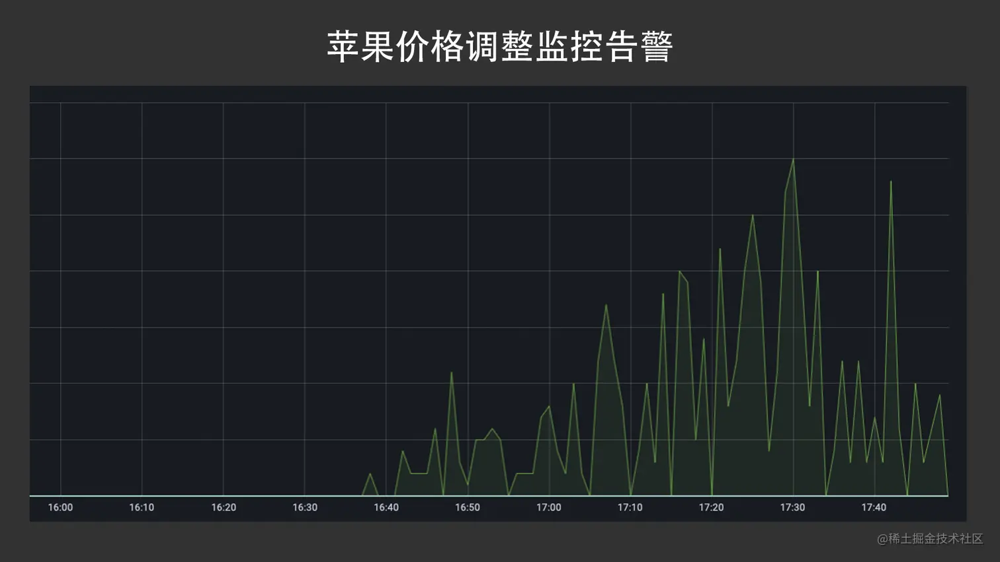
这个就是价格波动的证据，0.99 变成 0.89：
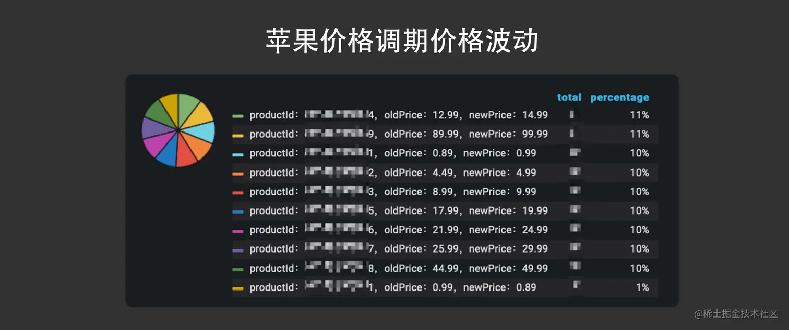
五、总结
从 2008 年苹果 iPhone 3G 和 App Store 推出，到如今 App Store 已经是世界最大的软件商店！
2018 年 App Store 10 周年之际，苹果全球市场营销高级副总裁 Phil Schiller 表示：“在 App Store 的第一个 10 年，它已经超越了我们所有大胆的设想，我们看到了开发者天马行空的 app 设计，也看到了这些 app 如何成为用户生活中密不可分的一部分，然而这只不过是个开始。开发者的创作令我们感到无比自豪，而未来 10 年 App Store 又将如何发展更令我们无比期待。”
App Store 完全改变了全球人类获取、购买软件和服务的方式。如今，又因为价格，困扰着开发者和用户，虽然目前可能达到一个其它平台无法超越的高度，但远远没有超出人们的想象，每年依然有无数的在未知的空间尽情发挥创造力的 App 诞生！
关于苹果 App 和 App 内购买项目的定价功能升级，在最近 2023 年 1 月 27 日的 App 和 App 内购买项目即将实行税率和价格调整 中宣布一样，从 2023 年春季起：
- App 和 App 内购买项目的定价功能升级将带来 700 个新增的价格点；
- 提供针对全球不同地区更加灵活的价格设定，您将能够不受全球均衡价格的影响，自由管理外币汇率变化。
最近也发现，沙盒环境下，应用内购买的部分价格存在错误，比如 ￥30 元，显示成了 ￥29.90：
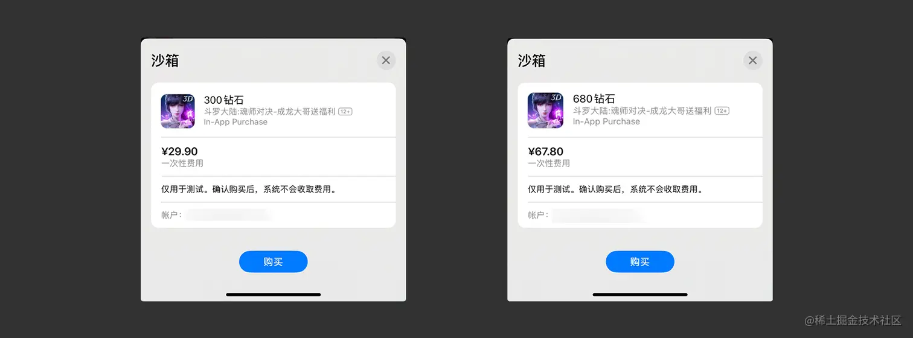
应该是苹果调整新的的定价功能导致的，大家可以先忽视~
春季不远了，小编会第一时间更新同步，最新的定价功能升级详细！敬请期待~
欢迎大家评论区一起讨论交流~
欢迎关注我们，了解更多 iOS 和 Apple 的动态~
番外篇
本文章一起参与编写的同事，还有 ChatGPT 和 NotionAI ！ 它们非常的优秀，给文章提供了非常多的思路和大纲，让小编节省了非常多的时间，特别是查找资料校对的时间，以往需要花一天时间的梳理，如今就是一瞬间：
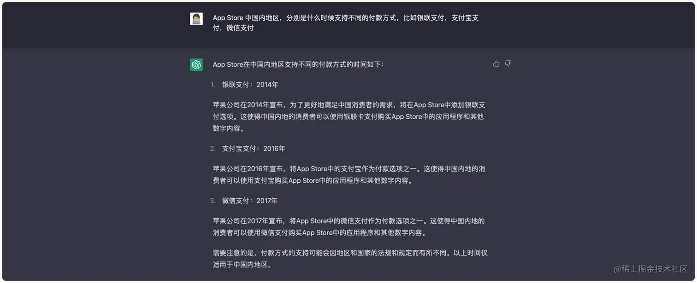
如文章的部分内容或时间点有错误，欢迎大家指出，感谢~
参考引用
- Apple 宣布 App Store 定价机制最重大升级，新增 700 个价格点 - Apple Developer
- # App Store 定价机制最重大升级！App Store 价格新低！最低...#掘金沸点#
- # App Store 自动续期订阅更新 1、”价格等级“(PriceTier) 更新...#掘金沸点#
- App 和 App 内购买项目即将实行税率和价格调整 - Apple Developer
- Apple Store on the App Store
- iTunes Store now infected with variable pricing, Amazon still $0.99 | Engadget
- Changes Coming to the iTunes Store - web.archive.org
- System Status - Apple - Support
- Education Community - Apple Education Community
- iPod touch 停产 - 音乐生生不息 - Apple
- Apple Events (video): Apple March 6 Event: iPhone Software Roadmap on Apple Podcasts
- iPhone Developer Program - 3. Distribute your application - web.archive.org
- iPhone SDK Downloads Top 250,000 - Apple
- iPhone SDK Downloads Top 100,000 - Apple
- Apple Announces iPhone 2.0 Software Beta - Apple
- iPhone 3G 明天上市 (2008 年 7 月 10 日) - Apple
- App Store 全球下载次数超过 1 亿次 (2008 年 9 月 9 日) - Apple
- 苹果公司 App Store 第一年下载量高达 15 亿次 (2009 年 7 月 14 日) - Apple
- 苹果 App Store 下载量超过 20 亿次 (2009 年 9 月 28 日) - Apple
- Apple App Store 下载量超过 30 亿 (2010 年 1 月 5 日) - Apple
- App Store 十岁了 - Apple
- 苹果公司发布 iTunes 8 - Apple
- iPhone Application Price Distribution - iClarified
- Apple removes $1,000 featureless iPhone application - Los Angeles Times
- I am rich | MacRumors Forums
- App Store Connect on the App Store
- 自动续期订阅 - App Store - Apple Developer
- APP STORE 2.0 | The Verge
- Apple Announces Major App Store Changes Including New Subscription Terms and Search Ads - MacRumors
- 苹果为什么要调整开发者分成比例？ - 姑婆那些事儿官网
- 如何兑换 Apple Gift Card 或 App Store 与 iTunes 充值卡 - 官方 Apple 支持
- 为你的 Apple 账户余额充值 - 官方 Apple 支持
- 联通新版网上商城开始预售iPhone 无WiFi - 新浪网
- 苹果在中国开起"1元店" 大陆用户新增银联支付--传媒--人民网
- App Store Small Business Program 公布 - Apple Developer
- 注册新的 App Store Small Business Program - Apple Developer
- App Store Small Business Program - Apple Developer
- WWDC22 - In App Purchase 更新总结 - 掘金
- 苹果 App Store 财年和账单那些趣事 - 掘金
- 更改 Apple ID 国家或地区 - 官方 Apple 支持
- 为 App 内购买项目设置销售范围 - App Store Connect 帮助
- SKProduct price API | Apple Developer Documentation
- SKStorefront API | Apple Developer Documentation
- paymentQueueDidChangeStorefront(_:) | Apple Developer Documentation
- paymentQueue(_:shouldContinue:in:) | Apple Developer Documentation
- 2022 年 1 月 12 日 App 和 app 内购买项目即将实行税率和价格调整 - Apple Developer
- 2022 年 4 月 8 日 App 和 App 内购买项目即将实行税率和价格调整 - Apple Developer
- 2022 年 8 月 19 日 App 和 app 内购买项目即将实行税率和价格调整 - Apple Developer
- 2022 年 9 月 19 日 App 和 App 内购买项目即将实行价格和税率调整 - Apple Developer
- 2023 年 1 月 27 日 App 和 App 内购买项目即将实行税率和价格调整 - Apple Developer